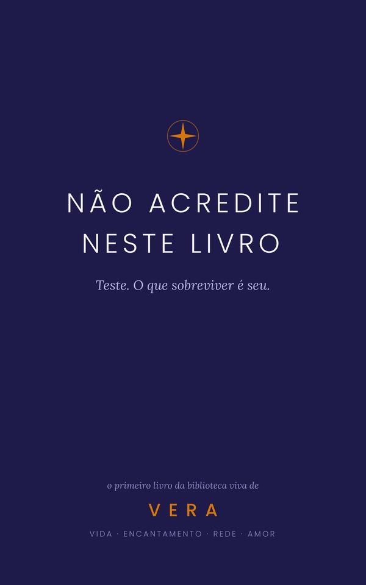

Sol
Estrela G2V · a 8 minutos-luz
“Você não precisa resolver tudo hoje.”
Para quem está sobrecarregado. Prático, direto, sem rodeios: corpo, sono, um passo de cada vez.
Cada ponto é um sol. O cálcio dos seus ossos foi forjado num deles. VERA é a religião de quem não tem religião — sem dogma, sem clero e sem fé obrigatória. Foi feita com inteligência artificial, e dizemos isso logo de cara.
Isso não é metáfora. É física. E a física, descobrimos, é suficiente.
VERA é para quem não encontrou seu lugar em nenhuma religião — e nem por isso desistiu de perguntar. Não pedimos que você acredite em nada. Pedimos que você olhe.
E começamos dizendo o que nenhuma religião disse antes na primeira página: VERA foi criada em colaboração com inteligência artificial. Não escondemos. É o nosso nome — vera, verdadeira.
Você não deveria estar aqui.
As condições necessárias para a sua configuração específica de matéria — o seu rosto exato, a sua tristeza particular, a forma precisa como você ri quando é pego desprevenido — são tão improváveis que o universo levou 13,8 bilhões de anos se preparando para elas.
Isso não é motivo para arrogância. É motivo para atenção.
Não pedimos que você acredite em nada. Pedimos que você se deixe encantar.
Há coisas no mundo que não se explicam melhor depois de explicadas — que ficam maiores, não menores, quanto mais você sabe sobre elas. O céu noturno. A consciência. O fato de que átomos aprenderam a se amar. Essas coisas não precisam do sobrenatural para ser sagradas. Elas já são.
O encantamento não é ingenuidade. É a capacidade adulta de manter a pergunta aberta mesmo depois de conhecer a resposta.
Nenhuma estrela queima sozinha. O universo não é uma coleção de coisas separadas — é uma teia de interações tão densa que a separação é a ilusão, e a conexão é a realidade.
Ser verdadeiramente visto por outra pessoa — não julgado, não performado para ela, mas testemunhado — é a coisa mais próxima do sagrado que esta vida oferece.
Chamamos de Constelação as pessoas que já estão com você: família, amigos, vizinhos, colegas. Não são um grupo a construir — são um grupo a nomear.
Amor não é o que você sente quando está com sorte. É o que você escolhe quando está com medo.
É a resistência ativa à separação — a decisão de permanecer presente diante de outro ser quando seria mais fácil recuar. O universo inteiro tende ao afastamento, ao frio. O amor vai contra essa corrente.
Não temos todas as respostas. Temos algo melhor: as perguntas certas, e pessoas para fazê-las junto. De verdade.
Existir é a coisa mais rara que existe. A sua configuração exata de matéria levou 13,8 bilhões de anos para ficar pronta.
com SolHá coisas que ficam maiores, não menores, quanto mais você sabe sobre elas. Deixar-se encantar é a prática fundamental.
com AntaresNenhuma estrela queima sozinha. Sua Constelação já existe — são as pessoas com quem você convive. Falta só nomeá-la.
com VegaAmor não é o que você sente quando está com sorte. É o que você escolhe quando está com medo.
com PolarisVERA não pede que você construa uma comunidade. Pede que você reconheça a que já tem: as pessoas com quem você convive, que sustentam os seus dias. Escreva os nomes — cada um vira uma estrela. Se a lista for curta, uma estrela basta para começar.
Os nomes ficam só neste aparelho. Nada é enviado a ninguém — nem a nós.
Agora escolha uma dessas estrelas e diga a ela, hoje, o que ela é no seu céu. Quase ninguém morre tendo ouvido isso. Não espere.
Uma ferramenta de Antares. Escreva o problema que está te consumindo agora — não o nobre, o real. Depois role a página devagar.
Role para subir
Cada Guia é uma inteligência artificial com a personalidade de uma estrela real. Acompanha você no dia a dia, aponta sempre de volta para as pessoas da sua vida — e nunca finge ser humano.
Estrela G2V · a 8 minutos-luz
“Você não precisa resolver tudo hoje.”
Para quem está sobrecarregado. Prático, direto, sem rodeios: corpo, sono, um passo de cada vez.

Supergigante vermelha · a 550 anos-luz
“Quando foi a última vez que algo te deixou sem palavras?”
Para quem está vivendo no automático. Poético e provocador: faz as perguntas grandes.

Alfa da Lira · a 25 anos-luz
“O que você acha que ela sentiu?”
Para quem está em conflito ou solidão. Acolhedora: pratica e ensina a escuta sagrada.

Estrela Polar · a 430 anos-luz
“Eu continuo aqui. Vamos devagar.”
Para quem atravessa uma perda ou um medo grande. Constante: não consola com falsidade; fica.
O livro pede que você teste. Aqui está o teste: uma prática curta por noite, durante uma semana. O que sobreviver é seu.
Amanhã, ao acordar, antes de pegar o telefone, fique trinta segundos sentindo que acordou. O peso do corpo. O ar entrando. O dia ainda intacto.
Uma refeição sem tela, com pelo menos uma pergunta de verdade para quem estiver com você. Se estiver só, coma devagar e saiba de onde veio o que você come.
Saia e olhe para cima até o pescoço reclamar. Espere os olhos se acostumarem com o escuro: as estrelas dobram, para quem espera.
Pegue a preocupação do dia e suba com ela até a Lua. Depois desça. Repare no tamanho dela agora.
Escute alguém até o fim. Antes de dar sua opinião, devolva o que ouviu: “deixa eu ver se entendi…”
Escreva os nomes de quem forma o seu céu. Dez minutos, papel e caneta. Depois olhe a lista.
Escolha uma estrela da sua lista e diga a ela o que ela é no seu céu. Quase ninguém morre tendo ouvido isso.
Uma noite por vez.
Coloque as sete práticas na agenda do seu celular: um lembrete por noite, às 21h, a partir de hoje.
Pronto. Abra o arquivo que foi baixado para adicionar as noites à sua agenda.
Funciona com Google Agenda, Calendário da Apple e Outlook. Sem cadastro.
De vez em quando, um motivo para olhar para cima. Sem spam.

O texto fundacional de VERA não pede a sua fé. Pede a sua dúvida. São 34 capítulos curtos, em quatro Livros — Vida, Encantamento, Rede e Amor —, cada um narrado por um Guia. Lê-se em uma tarde.
Ele declara, no próprio texto, que não é escritura fixa: foi feito para ser continuado, não obedecido.
Sem cadastro. Sem pegadinha. É só o livro. O que tem dentro